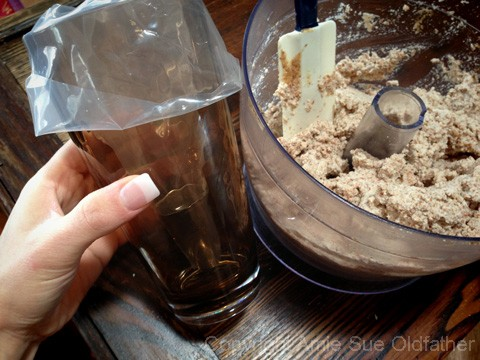
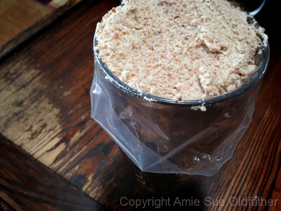
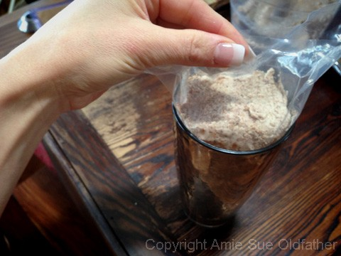
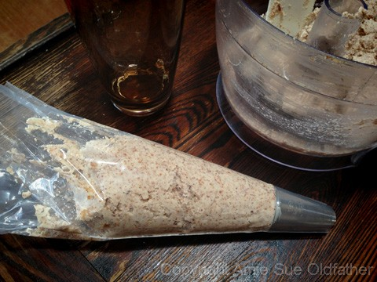
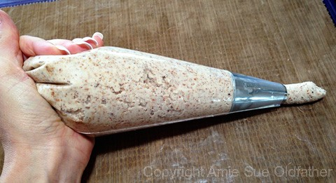
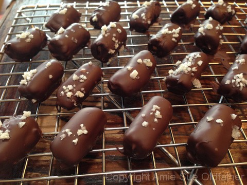

Salted Chocolate Covered Pretzels

~ raw, vegan, gluten-free ~
A pretzel is NORMALLY a type of baked food made from dough in soft and hard varieties and savory or sweet flavors in a unique knot-like shape, originating in Europe. Pretzels in stick form may also be called pretzels in the English-speaking context.
The size varies from large enough for one to be a sufficient serving, too much smaller. So keep this in mind as you create your pretzels. I will give some basic guidelines on how to create them, but in the end, you can add your own twist to them… literally.
This will be one of those recipes that you can tuck away and pull out when you are in the mood for something crunchy and salty. Due to the nature of the ingredients and how it is made, and they should have a pretty long shelf-life, providing you don’t eat them all in one sitting. hehe
This recipe turned out to be a huge hit. I have run them through a tough panel of taste testers, and everyone commented on how wonderful they were and couldn’t believe that they weren’t the real thing. I have already released the recipe to make the pretzels for a great salty and savory snack. By adding chocolate they are transformed into a sweet and salty snack, so I wanted to give them their own posting.
As far as the basic recipe goes, I am not going suggest substituting any of the ingredients. It took me some time to find the right balance of flavors to recreate the flavor of a real pretzel. As far as the chocolate goes, you can make a raw hardening chocolate coating or use organic, vegan chocolate chips (not raw). Just know that there are options that can meet you where you are on your culinary journey. I hope you don’t mind a short run of pretzel porn to get your mouth-watering. :)
Ingredients:
yields 5 cups dried 1″ pieces
Outer Coating:
- In a food processor, fitted with an “S” blade, pulse together the almond pulp, ground flaxseed, and salt.
- Add almond butter, water, aminos, maple syrup, and vanilla. Process until everything is well combined.
Piping bag —
- You will need a disposable piping bag and a 1/2″ piping tip.
- Once you have the tip in place, put the bag in a tall glass, and fold the edges over the glass.
- This will create a stand, and it will make it easy to fill it with the batter. I posted the photos below.
- Fill the piping bag with batter (I had to refill the bag a second time). Work all of the air bubbles out of the bag so that it doesn’t “burp” while creating a line of dough.
- Place a teflex sheet on the mesh sheet that comes with the dehydrator.
- Hold the bag at a 22 1/2 degree angle (or 22 haha) and with steady, consistent pressure, squeeze the batter out and slowly slide the tip down the teflex sheet.
- Don’t go too fast and cause the line to break and don’t go too slow which will cause bulges. You will quickly get the hang of it.
- Create solid lines from one side of the tray to the other. I have an Excalibur dehydrator that has large square trays.
- Sprinkle coarse sea on top and lightly press it into the dough. Because we are not using yeast these pretzels won’t rise causing the dough to grab onto the salt, so we have to help it a little.
- Dehydrate at 145 degrees for 1 hour to set the “outer crust.” Cut into 1″ pieces and then place them on the mesh sheet. Continue drying at 115 degrees for 6-8 hours or until dry. They do firm up a tad more once they cool.
- Dip the pretzels in your choice of chocolate coating. Allow them to dry on parchment paper, then store in an airtight sealed container.
Culinary Explanations:
- Why do I start the dehydrator at 145 degrees (F)? Click (here) to learn the reason behind this.
- When working with fresh ingredients, it is important to taste test as you build a recipe. Learn why (here).
- Don’t own a dehydrator? Learn how to use your oven (here). I do however truly believe that it is a worthwhile investment. Click (here) to learn what I use.






© AmieSue.com